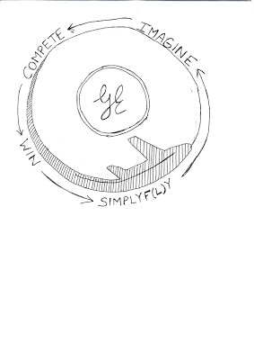
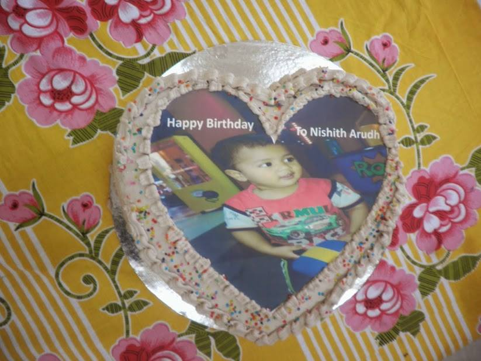
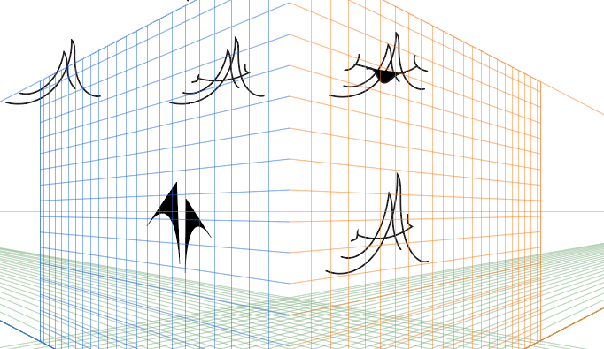
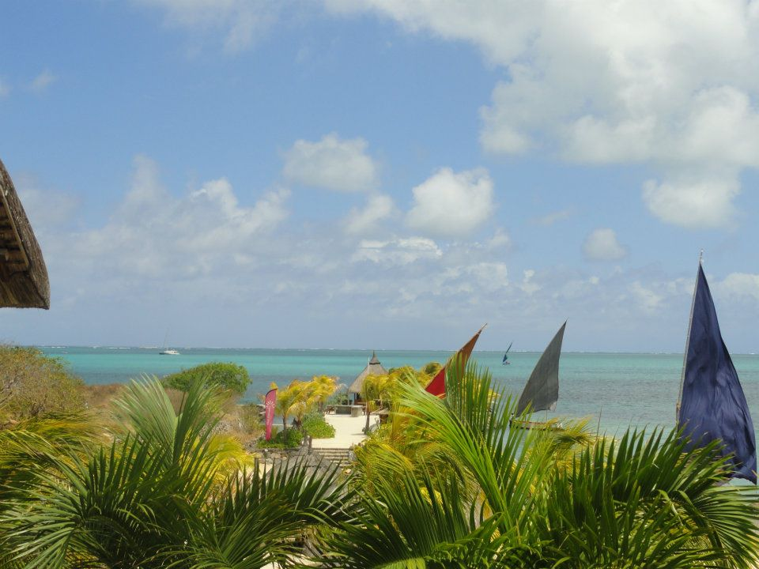
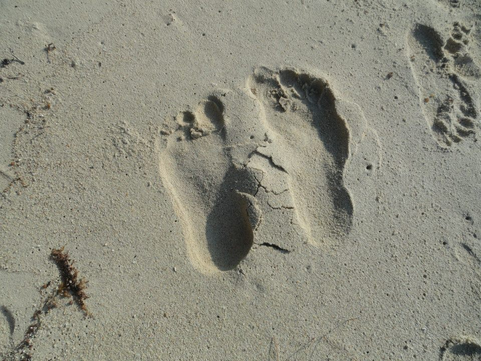
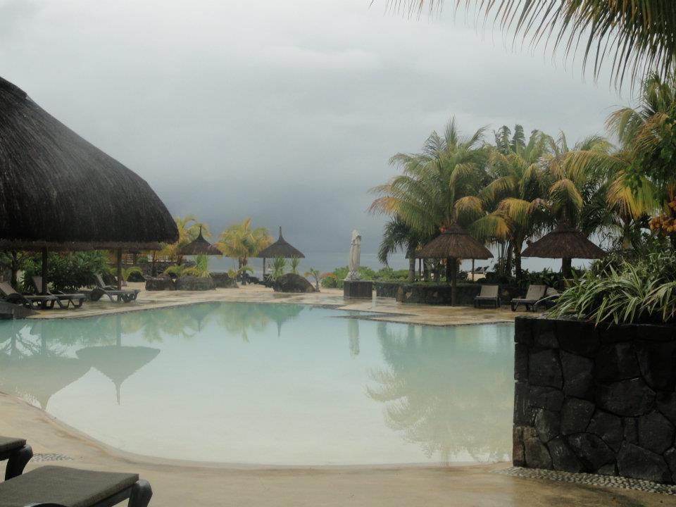
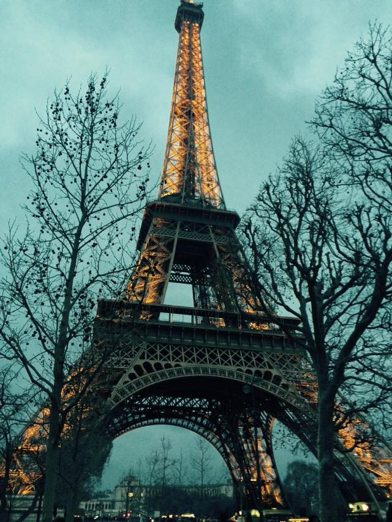
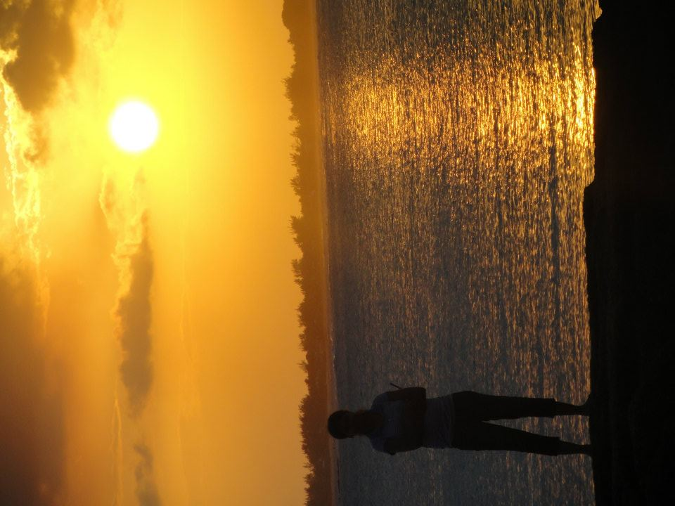
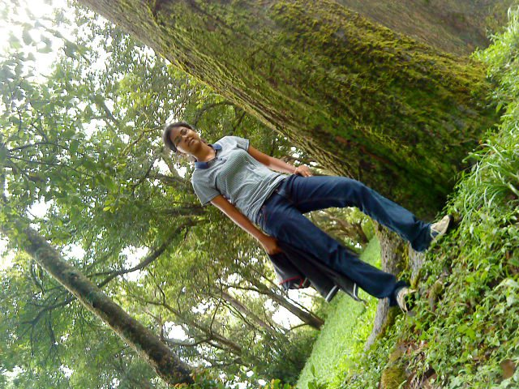

Miscellenaeous Projects
Though I have won numerous art and painting competitions all through my school and college, this is something special, because I won this after becoming a young mother of super smart kid.
In 2014, while I was working in GE Healthcare as a Senior Design Engineer, they practiced a theme of "Simplication" for the whole year. For gifting the employees with a coffee mug, they had a quick logo design contest, in which you are given an hour and a beautiful gift for the winner.
Here's my scanned copy of design, which won first place in the competition.

It's endless joy to see this logo everywhere from coffee mugs to t-shirts in GE that year
If you want to learn more about my interests, please email me at aarthi@brown.edu.
Cake design
Design is present everywhere. As a loving mother, I wanted to make my little son happy.
Hence, I decided to design, something which will make him wonder. Above all, doing anything for our kids, made this a wonderful memory for me.
I chose this design for his birthday cake.
Here's a sample picture.

It's my son edited picture, imprinted on the cake. As expected, there was no bound to his joy.
fun scribblings
From my childhood, I always used to remember even the most trivial things in life. In short, its hard for me to forget anything and I also had a fun habit of scribbling small drawings all through my notebook.
I captured this, because, these were my first play with Adobe Illustrator - where I tried to create a logo for myself.

Fun yeah?
Aarthi Anbalagan's dream moments
Honors
These were a few happy moments in my life.
- Stood first among 71000 students in my 12th grade, in my county
- Stood first in my University in undergrad, and received gold medal from His excellency Dr. Surjeet Singh Parnala, ex-governor of state, Tamilnadu, India
- JN Tata Memorial Endowment awardee, 2016
- Foundations of GE Leadership, 2015
- Recipient of CRA-W grad cohort scholarship, 2017
Jack of all trades, trying to master some! :)
Contributed towards improving my communication skills, especially while working for college magazine "Srishti". I have contributed in designing a few pages, in editing and also an article on Page 63.
Playing shuttle and mountain biking is my favorite pastime and also a way to de-stress and refresh myself for new challenges. On the way, I won in Shuttle and basketball for my school, university, in Nokia and in GE corporate tournaments.
Volunteering
Volunteering helped me to be a good citizen of the world. Even from my college, I was part of philanthropic group "Vidiyal". Vidiyal is a student body, which is formed by student volunteers in CIT. It's main aim is to educate children from economically backward communities around Coimbatore. As part of this, we used to visit school children in "Economically backward" societies, and teach them subjects like Maths, Science. In 2014, they recently launched a documentary named Vidiyal. Also, once I started working as Software Engineer, we formed a formal educational charitable trust, EnMakkal, which works towards child empowerment in India. Reading novels, helped me gain insight into variety of general knowledge.Favorite authors: Dan Brown, JK Rowling, Charles Dickens, R.L.Stevenson etc.
Travel
Travelling the world is my dream. And photography is my passion.
A few random clicks..







Stay tuned. More to come!